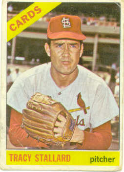

1966 Topps
#7 Tracy Stallard
This is one of my favorite sets. It includes a bunch of nifty looking
cards of many of my favorite players... #1-Mays,#50-Mantle,#70-Yaz,#126-Palmer,
#365-Maris and #410-Kaline. But my favorite is one of the first '66's I ever owned.
I noticed early on, reading the back of the card, of course, that Tracy and I shared
a birthday (August 31st) and that endeared him to me. It wasn't until years later
That I discoverd that it was Mr. Stallard who delivered #61 to Maris in '61. That
just made him all the more special!